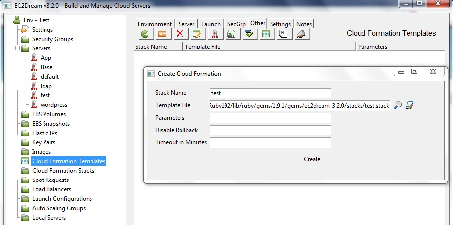
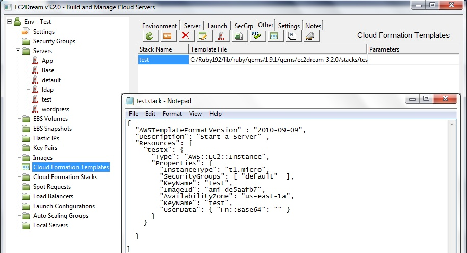
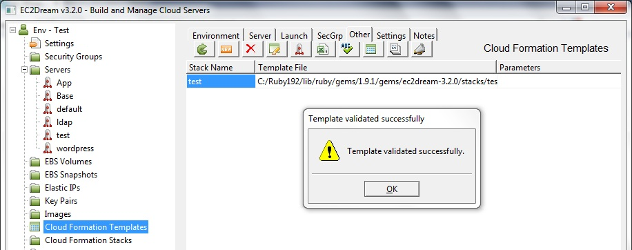
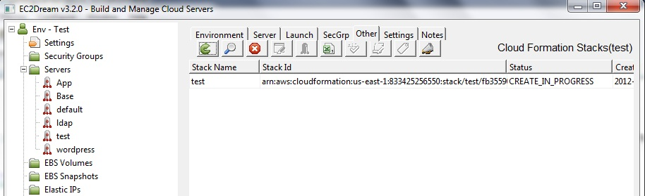
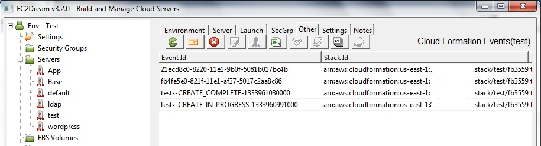

Cloud Formation
Cloud Formation lets you create a JSON format configuration file to specify the different Amazon Servers and other services that you wish to run. You can specify the chef command in the user data of a EC2 instance request to provision the server when it starts.Create a Cloud Formation Template
1. Select Cloud Formation Templates from the EC2Dream tree and press the New button.
2. Specify the stack name and a template file. By default there is a test stack template file. Change this to your own file and create the configuration.
3. Edit the template file by selecting the stack pressing the Edit button.

4. Validate the template by selecting te stack and pressing the validate button.

Run a Cloud Formation stack
1. Run the stack by selecting the stack and pressing the launch button.2. You will then see the status of the running stack.

3. To terminate the stack press the stop button.
View Cloud Formation Events
1. select the stack name and press the events button.